응용지질기사 (2015-08-16 기출문제)
1과목: 암석학 및 광물학
1. 보웬(Bowen)의 반응계열에 대한 설명 중 옳은 것은?
- 감람석은 연속반응계열 광물 중에서 가장 먼저 정출되는 광물이다.
- 고온에서 정출되는 사장석은 Na-사장석이며, 저온으로 갈수록 Ca-사장석이 정출된다.
- 유문암은 현무암질 마그마의 분별결정작용에 의해 생성될 수 있다.
- 석영은 모든 화성암의 구성광물이 될 수 있다.
(정답률: 49%)

2. 화산분출 시 마그마의 80% 정도를 차지하며 SiO2 함량이 일반적으로 50% 내외인 마그마는?
- 유문암질 마그마
- 안산암질 마그마
- 현무암질 마그마
- 화강암질 마그마
(정답률: 67%)
3. 셰일이 광역변성작용으로 슬레이트(slate)로 변성될 때 나타나는 특징적인 구조는?
- 선구조(Lineation)
- 쪼개짐(Cleavage)
- 편리(Schistosity)
- 편마구조(Gneissosity)
(정답률: 63%)
4. 화학적 퇴적암인 쳐트(chert)에 대한 설명으로 옳지 않은 것은?
- 규질의 화학적 침전물로서 치밀하고 굳은 암석이며 SiO2의 함량은 95%에 달한다.
- 쳐트 중 지층을 이룬 것이 층상 쳐트이고 석회암 중에 불규칙한 모양으로 층상을 보이지 않는 것은 단괴상 쳐트이다.
- 층상 쳐트에는 적색인 것과 담청색인 것이 있다.
- 쳐트는 표면이 매끈하고 목쇄상으로 깨어진다.
(정답률: 63%)
5. 회장암(anorthosite)에 대한 설명으로 옳은 것은?
- 엽리가 매우 발달되어 있다.
- 주 구성광물은 사장석이다.
- 상부맨틀의 부분용융으로 생성된 초기마그마의 일종이다.
- 비현정질 암석이다.
(정답률: 68%)
6. 검은색의 광물과 담색광물이 호층을 이루며 변성되기 전에 있던 자형의 큰 광물의 결정이 갈리고 압연되어 눈 모양의 단면을 나타내는 반상변정을 포함하는 암석은?
- 슈도타킬라이트
- 혼펠스
- 휘석 편마암
- 안구상 편마암
(정답률: 77%)
7. 바람이 불거나 물이 흐를 때 발달하는 퇴적구조는?
- 사층리
- 건열
- 부정합
- 점이층리
(정답률: 75%)
8. 대륙과 대륙이 충돌하는 조산대에서 나타나는 전형적인 변성상계열은?
- 프란시스칸 변성상계열
- 산바가와 변성상계열
- 바로비안 변성상계열
- 접촉 변성상계열
(정답률: 53%)
9. 퇴적환경의 분류에서 육성환경에 속하지 않는 것은?
- 석호(lagoon)
- 플라야(playa)
- 에르그(erg)
- 습지(swamp)
(정답률: 70%)
10. 석영 섬록암(quartz diorite)의 구성광물에 대한 설명으로 옳은 것은? (단, 국제지질과학연맹(IUGS)의 분류에 의함)
- 석영 5% 미만, 사장석＜정작석
- 석영 5% 미만, 사장석＞정장석
- 석영 5~20%, 사장석＜정장석
- 석영 5~20%, 사장석＞정장석
(정답률: 58%)
11. 주상(columnar) 형태로 산출되는 대표적인 광물이 아닌 것은?
- 녹주석
- 전기석
- 휘안석
- 남정석
(정답률: 40%)
12. 다음은 어떤 결정면의 스테레오 투영법을 표시한 것이다. A점의 면기호로 알맞은 것은?
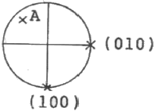
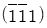
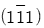
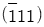
- (111)
(정답률: 60%)
13. 광물의 정확한 연구를 위해 사용되는 X-선 회절분석으로 얻을 수 없는 정보는?
- 단위포의 크기
- 결정구조 해석
- 광물의 감정
- 광물의 화학조성
(정답률: 61%)
14. 광물의 결정면에 염산이나 불산과 같은 시약을 사용하면 식상(etch figure)이 나타나는데 식상의 형태를 보고 알 수 있는 것은?
- 화학조성
- 결정형태
- 결정의 대칭
- 광물의 용해속도
(정답률: 39%)
15. 용리(Exsolution) 현상에 의해 형성된 조직을 보일 수 있는 것은?
- 흑연-다이아몬드
- 정장석-Na사장석
- 물-얼음
- 홍주석-규선석
(정답률: 47%)
16. 서로 같은 유형의 결정구조를 가진 광물들에 있어서 경도에 대한 일반적인 설명으로 옳지 않은 것은?
- 이온 간의 거리가 짧을수록 경도는 크다.
- 구성 원자나 이온들의 크기가 클수록 경도는 크다.
- 이온의 원자가 커질수록 경도는 크다.
- 구성 원자들의 비중이 클수록 경도는 크다.
(정답률: 41%)
17. 배위수(C.N)가 4인 광물에서 음이온에 대한 양이온의 반지름비로 가장 적절한 것은?
- 0.155~0225
- 0.225~0.414
- 0.414~0.732
- 0.732~1
(정답률: 66%)
18. 광물 등의 원자결합방식과 특성과의 관계에 대한 설명으로 옳지 않은 것은?
- 공유결합을 하고 있는 광물들은 대체로 용해가 잘 되지 않고 대단히 높은 용융점과 비등점을 가지고 있다.
- 금속결합을 하고 있는 광물들은 전기와 열에 대한 높은 전도성을 가진다.
- 광물 중에서 이온결합의 좋은 예는 소금과 형석에서 찾아볼 수 있다.
- 유기탄소화합물에서 분자 내의 결합은 잔류결합이고, 분자 간에는 공유결합으로 되어 있다.
(정답률: 63%)
19. 광물 결정 내에 미세한 비정질 상태인 메타믹트(metamict) 현상이 발생하는 원인은?
- 광물에 포함된 결정수에 의해
- 광물 결정의 비틀림에 의해
- 광물에 포함된 방사성 원소에 의해
- 산소의 산화작용에 의해
(정답률: 50%)
20. 결정의 성장이 우각이나 능에서 주로 일어날 때 만들어지는 불완전한 결정은 무엇인가?
- 해정
- 누대상 결정
- 휘스커
- 수지상 결정
(정답률: 66%)
2과목: 구조지질학
21. 최대 응력(σ1)이 수직으로, 최소 응력(σ3)이 수평으로 작용할 때 생기는 단층의 형태는?
- 주향이동단층
- 역단층
- 정단층
- 변환단층
(정답률: 61%)
22. 밀도가 2500kg/m3, 인장강도가 3MPa인 지층에서 정수 유체-압력비(λ)가 0.4라면 절리형성의 최대깊이는 얼마인가? (단, 중력가속도는 9.8m/s2이다.)
- 약 0.1km
- 약 0.5km
- 약 1km
- 약 5km
(정답률: 40%)
23. 다음 중 해안에 가장 인접한 퇴적 지형은 무엇인가?
- 삼각주
- 선상지
- 충적추
- 범람원
(정답률: 67%)
24. 히말라야 조산대의 특징이 아닌 것은?
- 횡압력에 의한 길이의 축소
- 조산작용 시 발생한 역단층
- 습곡의 형성
- 대규모 함몰대와 퇴적분지
(정답률: 57%)
25. 다음 관계식 중 맞는 것은? (단, σ:응력, F:힘, A:면적, t:시간)
- σ=F/A
- F=σ/t
- σ=F/t
- F=σ/A
(정답률: 74%)
26. 다음 중 평형상태에서 두 개의 서로 직교하는 면에 작용하는 응력성분들(stress tensor components)을 바르게 나타낸 것은? (단, 2차원 평면상태이다.)
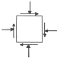
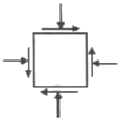
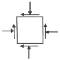
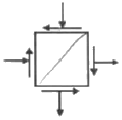
(정답률: 67%)
27. 송림변동에 의한 지질구조가 발달할 수 있는 우리나라 지층은?
- 대동계-경상계
- 경상계-조선계
- 조선계-평안계
- 평안계-대동계
(정답률: 44%)
28. 지구의 내부 구조에 대한 설명으로 옳지 않은 것은?
- 층상구조를 이룬다.
- 밀도는 내부로 갈수록 높아진다.
- 맨틀은 지구 전체의 약 82%에 달하는 체적을 차지하고, 고체상태이며 약 2900km 깊이까지 분포한다.
- 철이 액체상태로 존재하는 지구 내부의 중심부가 내핵이다.
(정답률: 64%)
29. 캘리포니아 산안드레아스 단층은 어떤 종류의 판 경계부인가?
- 발산경계
- 수렴경계
- 변환단층경계
- 충돌경계
(정답률: 69%)
30. 다음의 지질도에서 인지할 수 있는 부정합면은?
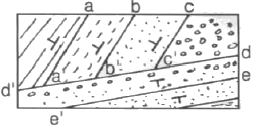
- a-a'
- b-b'
- c-c'
- d-d'
(정답률: 76%)
31. 다음의 습곡에 관한 설명 중 옳은 것은?
- 경사습곡(inclined fold)은 힌지의 침강각과 힌지면의 경사가 모두 수평이다.
- Ramsay의 습곡 분류 가운데 Class 2는 유사습곡(similar fold)이다.
- 익간각이 0°~30° 사이로 두 익부(limb)가 거의 평행한 습곡은 층간습곡(intrafolial fold)이다.
- Z-fold는 반시계 방향(counter clockwise)버전스(vergence)를 지시한다.
(정답률: 47%)
32. 다음 중 지판의 충돌로 인한 수평압축에 의해서 형성된 것으로 볼 수 없는 것은?
- 횡와습곡대
- 나페(nappe)
- 스러스트 단층대
- 지구대
(정답률: 67%)
33. 다음 중 지각 변동의 증거가 되기 어려운 지형은?
- 습곡산맥
- 단층절벽
- 칼데라호
- 돌리네
(정답률: 66%)
34. 맨틀대류의 상승부에 나타나는 특징이 아닌 것은?
- 천발지진
- 해구형성
- 열곡발달
- 베게용암분출
(정답률: 76%)
35. 음영대(shadow zone)의 직접적인 원인이 되는 지구 내부구조는?
- 맨틀
- 내핵
- 외핵
- 저속도층
(정답률: 62%)
36. 한반도의 선캠브리아누대에 속하는 지질단위가 아닌 것은?
- 경기변성암복합체
- 대석회암층군
- 율리층군
- 낭림누층군
(정답률: 49%)
37. 다음 중 빙하지형에 해당하는 용어가 아닌 것은?
- 모레인(moraine)
- 피요르드(fiord)
- 아레트(arete)
- 우발라(uvala)
(정답률: 56%)
38. 다음 중 지진발생과 가장 관련이 적은 것은?
- 액상화현상(liquefaction)
- 압쇄암(mylonite)
- 쓰나미(tsunami)
- 단층운동(faulting)
(정답률: 63%)
39. 해령(대양저 산맥)에서 500km 떨어진 곳에서 시추한 용함의 K-Ar 연령이 약 900만년이다. 판구조운동의 속도가 일정하다고 가정했을 때 해저확장속도는?
- 5.6cm/year
- 5.6mm/year
- 7.6cm/year
- 7.6mm/year
(정답률: 73%)
40. 습곡의 발달은 다층(multilayer)상태에서 인접한 층(layer)간의 두께와 역학적 성질(즉, 연성차이)에 크게 규제된다. 변형작용을 겪은 화강암에서 습곡구조가 일반적으로 관찰되지 않는 이유로 가장 알맞은 것은?
- 층리가 잘 발달하여 있기 때문이다.
- 변형작용 시 층리가 없어지기 때문이
- 층리가 발달되지 않은 등방성 암체이기 때문이다.
- 인접한 층리사이에서 연성차이가 너무 크기 때문이다.
(정답률: 61%)
3과목: 탐사공학
41. 물리검층에 관한 설명으로 옳지 않은 것은?
- 전기비저항 검층에 사용되는 이수는 반드시 전도성 이수이어야 한다.
- 자연전위 검층에서는 지표탐사에서 잡음으로 취급되는 전기화학적인 전위를 측정한다.
- 전기비저항 검층, 중성자 검층, 음파 검층은 모두 지층의 공극률을 산출할 수 있는 검층법이다.
- 시멘드본드 검층에서 시멘트와 케이싱 그리고 공벽과의 결합이 양호하면 불량한 경우보다 수신 신호의 진폭이 더 커진다.
(정답률: 24%)
42. 화학원소의 1차 분산에 의한 이상대를 찾기 위한 지구화학탐사의 대상시료는?
- 토양
- 암석
- 식물
- 지하수
(정답률: 59%)
43. 한 측점에 중력계를 설치하고 연속적으로 중력값을 측정하면 그 값들은 변하게 된다. 이러한 변화의 원인으로 옳은 것은?
- 계기변화와 조석영향
- 계기변화와 영년변화
- 일변화와 조석영향
- 일변화와 영년변화
(정답률: 36%)
44. 다음과 같은 탄성파의 주시곡선에 대한 설명으로 맞는 것은?
- 상부층의 속도는 200m/sec이다.
- 하부층의 속도는 상부층의 속도의 4배이다.
- 10m 지점까지는 굴절파가 도달하지 않는다.
- 10m 지점부터 굴절파가 직접파보다 더 빠르다.
(정답률: 60%)
45. 방사능 탐사에 대한 설명으로 옳지 않은 것은?
- 지표 부근의 암석들에 있는 칼륨, 토륨, 우라늄에 의해 발생된 자연방사능을 측정하는 방법이다.
- 가장 일반적인 측정방법은 γ선을 측정하는 것이다.
- 지표 부근의 암석을 대상으로 방사능을 측정하므로 항공참사의 적용은 불가능하다.
- 지표 암석 및 지표수에서 건강에 해로운 라돈의 지도 제작 등 환경문제에 활용할 수 있다.
(정답률: 72%)
46. 지구화학탐사에서 토양을 분류할 때 지형ㆍ모재ㆍ시간 등의 영향을 받아서 생성되는 토양은?
- 간대성 토양
- 성대성 토양
- 비성대성 토양
- 잔류 토양
(정답률: 50%)
47. 실제로 존재하는 층이 굴절법 탄성파 탐사로 탐지되지 않을 때 그 층을 무엇이라 하는가?
- 팬텀층(phantom layer)
- 숨은층(hidden layer)
- 굴절층(refracted layer)
- 저속도층(low velocity layer)
(정답률: 67%)
48. 석탄층 판별에 있어 적용하기에 가장 불리한 물리검층법은?
- 음파검층
- 전기검층
- 밀도검층
- 자연전위검층
(정답률: 35%)
49. 지오레이다 반사법 탐사 시 결정해야 할 탐사변수와 그에 대한 설명으로 옳지 않은 것은?
- 중심 주파수-중심 주파수가 높을수록 분해능은 높아지고 가탐심도도 커진다.
- 샘플링 간격-왜곡 없이 높은 주파수의 자료를 얻기 위해서는 샘플링 간격이 충분히 작아야 한다.
- 측점 간격-공간적 알리아싱(aliasing)을 피하기 위하여 측점 간격은 나이키스트(Nyquist)샘플링 간격보다 작아야 한다.
- 송수신 간격-레이다 탐사기기는 대상체에 따라 송수신 간격을 조절하는 것이 효과적이다.
(정답률: 57%)
50. 밀도 2.2g/cm3, 종파속도 1,000m/sec인 제1층과 밀도 2.6g/cm3, 종파속도, 3,000m/sec인 제2층이 수평으로 경계를 이루고 있다. 제1층으로부터 발생한 평면파(plane wave)가 경계면에 수직으로 입사할 때 그 반사계수는 얼마인가?
- 0.14
- 0.28
- 0.42
- 0.56
(정답률: 49%)
51. 전기탐사에서 한 지점의 깊은 곳까지의 비저항변화를 측정할 경우 일반적으로 가장 많이 사용되는 전극배열법은?
- 슐럼버저 배열법
- 웨너 배열법
- 쌍극자 배열법
- 정사각형 배열법
(정답률: 42%)
52. 플럭스게이트 자력계에 대한 설명으로 옳지 않은 것은?
- 강자성체의 자기 포화 특성을 이용하여 자기장을 측정하는 기기이다.
- 코일의 배열 방향에 따라 총자기나 특정한 방향의 성분을 측정할 수 있다.
- 플럭스게이트 자력계는 자기장의 기울기에 대하여 민감하므로 자기장의 기울기가 큰 곳에서는 사용할 수 없다.
- 플럭스게이트 자력계는 연속적인 출력을 얻을 수 있으므로 항공탐사에 효과적으로 사용된다.
(정답률: 61%)
53. 전기전자탐사법 중 자연송신원을 이용하는 탐사법은?
- MT 탐사
- CSAMT 탐사
- TEM 탐사
- IP 탐사
(정답률: 63%)
54. 중력 측정 시 사용되는 중력계 중에서 장주기수직 지진계의 원리를 응용하여 만든 것으로 전형적인 불안정형 중력계는?
- Gulf 중력계
- LaCoste-Romberg 중력계
- Boilden 중력계
- Askania 중력계
(정답률: 62%)
55. 점 반사원(point reflector)이 존재할 경우 GPR 탐사 단면상에 나타나는 반사 양상은? (단, 구조보정을 거치지 않은 경우)
- 정확하게 점 반사원의 위치에서만 반사기록이 나타난다.
- 점 반사원을 중심으로 포물선 형태의 회절양상을 보인다.
- 점 반사원을 중심으로 원형의 반사 양상을 보인다.
- 점 반사원은 GPR 단면상에 직선으로 나타난다.
(정답률: 53%)
56. 지열광상의 부존을 확인할 수 있는 물리탐사법이 아닌 것은?
- 렌트겐 법
- MT 법
- Curie 법
- P-파 지연법
(정답률: 48%)
57. 다음 그림과 같이 탄성파 전파속도 V1=1000m/sec, V2=3000m/sec인 수평 2층 구조에 대한 굴절법 탄성파 탐사시 지표면에 도달되는 굴절파와 지표면의 각도(a)는?
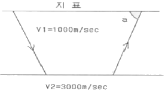
- 27°
- 45°
- 60°
- 71°
(정답률: 39%)
58. 밀도검층에서 γ선의 컴프턴 산란(compton seattering) 작용을 이용하여 측정하는 것은 무엇인가?
- 암석의 비저항
- 암석의 함수율
- 암석의 체적밀도
- 암석의 자화율
(정답률: 65%)
59. 지열 탐사에 이용되는 물리적 현상에 대한 설명으로 옳은 것은?
- 뜨거운 상태의 암석은 S파의 진폭이 증가한다.
- 뜨거운 상태의 암석은 P파의 속도가 감소한다.
- Curie점 이상의 온도에서 암석은 잃었던 자성을 얻게 된다.
- 뜨거운 상태의 암석의 전기비저항은 매우 높다.
(정답률: 46%)
60. 반사법 탄성파 탐사자료의 처리 순서로 옳은 것은?
- 트레이스 편집-NMO 보정-CMP 중합-구조보정
- 트레이스 편집-NMO 보정-구조보정-CMP 중합
- CMP 중합-NMP 보정-구조보정-트레이스 편집
- NMO 보정-구조보정-CMP 중합-트레이스 편집
(정답률: 47%)
4과목: 지질공학
61. 암석의 일축압축시험 결과에 영향을 미치는 내적 요인이 아닌 것은?
- 밀도
- 공극률
- 재하속도
- 이방성
(정답률: 65%)
62. 원위치시험의 종류 중 특성시험에 해당하지 않는 것은?
- 공내재하시험
- 평판재하시험
- 표준관입시험
- 투수시험
(정답률: 36%)
63. 어느 습윤 흙 시료의 함수비를 알기 위하여 시료를 용기에 넣어 무게를 측정하니 58.5g이었다. 이것을 노건조 시킨 후 무게를 측정하니 53.5g 이었다. 용기의 무게가 28.5g이라고 하면 이 사료의 함수비는?
- 20.97%
- 42.39%
- 53.47%
- 91.11%
(정답률: 57%)
64. 지반침하를 형태에 따라 분류할 때 불연속형 침하의 종류에 해당하지 않는 것은?
- 굴뚝형 침하
- 왕관형 침하
- 돌리네형 침하
- 굴형 침하
(정답률: 51%)
65. 자연 상태의 수평인 3개의 토층의 상태가 아래표와 같을 때 토층의 수직방향 등가투수계수는 얼마인가?
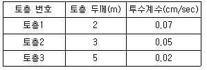
- 0.01cm/sec
- 0.03cm/sec
- 0.⑤cm/sec
- 0.07cm/sec
(정답률: 54%)
66. 사면의 경사각 Ψf, 파괴면의 경사각 Ψp, 파괴면의 마찰각 ø인 암반 사면에서 평면파괴가 일어날 조건으로 알맞은 것은?
- Ψf＞Ψp＞ø
- Ψp＞Ψf＞ø
- Ψp＞ø＞Ψf
- Ψf＞ø＞Ψp
(정답률: 55%)
67. 극히 느린 속도로 사면을 따라 미미하게 계속되는 풍화 생성물의 이동을 무엇이라 하는가?
- 포행(Creep)
- 계류(Creek)
- 유수(Steam)
- 이류(Mudflow)
(정답률: 72%)
68. 암반 사면설계를 위한 조사시 필히 수행하여야 할 사항이 아닌 것은?
- 응력해방법에 의한 초기응력 측정
- 불연속면에 대한 전단강도 측정
- 지표지질도와 시추코어 검층에 기초한 정밀 지질조사
- 지하수위 변동 조사
(정답률: 38%)
69. 지반조사 및 시험을 위해 실시하는 시추법 중 비트회전으로 지반을 분쇄하여 굴진하며 토사 및 암반 등 거의 모든 지층에 사용 가능한 방법은?
- 충격식 시추
- 회전식 시추
- 오거식 시추
- 변위식 시추
(정답률: 73%)
70. 지하수의 가압층(confining layer)으로 적당하지 않은 것은?
- 준대수층
- 주수대수층
- 난대수층
- 비대수층
(정답률: 48%)
71. 지표면에 2MN의 집중하중이 작용하고 있다. 작용점 바로 맡으로 5m 떨어진 지점에 발생하는 연직응력 증가량은 얼마인가?
- 9.6kPa
- 17.7kPa
- 25.2kPa
- 38.2kPa
(정답률: 18%)
72. 유선망에 대한 설명으로 옳지 않은 것은?
- 등수두선과 유선은 항상 직각이다.
- 인접한 두 유선 사이를 흐르는 유량은 일정하다.
- 유선 사이의 거리가 넓어지면 유속이 빨라진다.
- 인접한 두 등수두선 사이의 손실수두는 모두 같다.
(정답률: 61%)
73. 암석의 탄성파 속도에 영향을 미치는 요소에 대한 설명으로 틀린 것은?
- 밀도가 클수록 전파속도가 증가한다.
- 공극률이 증가하면 전파속도는 감소한다.
- 암석에 작용하는 구속응력이 증가할수록 전파속도는 증가한다.
- 층상 암석에서 층에 평행한 방향의 전파 속도가 수직방향의 속도보다 작게 나타난다.
(정답률: 58%)
74. 사면보강공법 중 록 앵커(rock anchor) 공법에 대한 설명으로 옳지 않은 것은?
- 앵커의 인장력으로 암반블록의 전단저항력을 증가시켜 암반을 안정화시키는 공법이다.
- 대단위 사면붕괴에 대한 보강대책으로 유리하다.
- 시간경과에 따른 긴장재의 이완으로 인장력이 증가하는 효과를 이용한다.
- 파쇄가 심하고 절리가 발달된 지반에서는 적용성이 떨어진다.
(정답률: 63%)
75. 암반의 공학적 분류체계인 RMR(Rock Mass Rating) 분류법에서 고려되는 요인이 아닌 것은?
- 암질지수(RQD)
- 절리 간격
- 일축압축강도
- 절리군의 개수
(정답률: 33%)
76. 동다짐(Dynamic compaction) 공법에 대한 설명으로 옳지 않은 것은?
- 전력설비가 없는 곳에서의 시공이 가능하다.
- 지지력의 소폭적인 증가가 요구될 때 효과적이다.
- 주변의 흙이 교란되지 않고 소음이 없다.
- 낙하고 조절이 가능하여 강력한 에너지를 얻을 수 있다.
(정답률: 62%)
77. Barton에 의해 제안된 절리면의 전단강도식에 포함되어 있지 않은 항목은?
- 절리면의 점착력
- 절리면의 압축강도
- 절리면 거칠기 계수
- 절리면의 기본마찰각
(정답률: 42%)
78. 어떤 흙시료의 공시체에 주응력 σ1=7.0kg/cm2, σ3=1.0kg/cm2를 가했을 때 파괴가 일어났다면 파괴면상에서의 전단응력은? (단, 파괴면은 최대주응력 σ1이 작용하는 면과 60° 각도를 이루고 있다.)
- 1.30kg/cm2
- 1.75kg/cm2
- 2.60kg/cm2
- 3.50kg/cm2
(정답률: 48%)
79. 터널의 안전하고 효율적인 시공을 위해 터널의 지보재와 병용하여 사용되는 보조공법 중 천단부의 안정을 위한 지반강화를 목적으로 적용하는 공법이 아닌 것은?
- 훠폴링
- 선진수평보링
- 강관다단그라우팅
- 파이프루프
(정답률: 44%)
80. 그림에서 유체의 흐름은 일정하고(steady), 유출속도(v)도 2m/day로 일정하다. 또한 A와 B지점 사이의 투수계수 KAB=10m/day이며, A지점의 수두는 hA=10m이다. 이 때 B지점에서의 수두는 얼마인가?
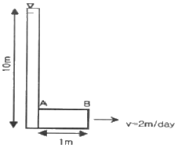
- 8.6m
- 9.8m
- 10m
- 10.4m
(정답률: 63%)
5과목: 광상학
81. 반암형 몰리브덴 광상(porphyry Mo deposits)탐사 시 가장 관련성 있는 관계화성암류는?
- 안산암류
- 현무암류
- 섬록암류
- 화강암류
(정답률: 44%)
82. 우리나라에서 반암 동광상이 보고된 지역은?
- 경기변성대 지역
- 경상분지 지역
- 음성분지 지역
- 태백산 지역
(정답률: 65%)
83. 세계적인 철산지로 유명한 키루나(Kiruna)광상은 다음 중 어느 광상에 해당되는가?
- 열수광상
- 기성광상
- 정마그마광상
- 접촉교대광상
(정답률: 60%)
84. 카보네타이트(carbonatite)에 대한 설명으로 옳지 않은 것은?
- 규산염광물로 구성된 화성암과 비교하여 마그마 기원의 탄산염광물이 다수 함유된 암석이다.
- 일반적으로 동심원적 불규칙적인 관입암체 또는 분출암체로 초염기성암과 밀접하게 연관되어 수반된다.
- 카보네타이트는 주로 판 경계부 등 지체구조상 불안정 지괴를 중심으로 산출된다.
- 카보네타이트는 경제적 측면에서 함Nb-REE 산화광물이 주요 개발대상이다.
(정답률: 41%)
85. 다음 중 큰 규모의 마그네사이트 광상이 부존되어 있는 지층은 어느 것인가?
- 마천령계
- 연천계
- 옥천계
- 상원계
(정답률: 62%)
86. 후생광상(Epigenetic deposits)이 생성되기 전에 광화용액이 침투하기 쉽고 침전하기 좋은 여건을 마련해주는 전위적인 작용을 무엇이라 하는가?
- 속성작용
- 광화준비작용
- 모암변질작용
- 스카른화작용
(정답률: 67%)
87. 석탄의 탄화가 진행됨에 다라 물리-화학적 성질의 변화로 옳지 않은 것은?
- 탄화가 잘 된 석탄일수록 휘발분이 적다.
- 탄화가 잘 되면 탄소의 함유량이 높아진다.
- 탄화가 잘 되면 수소의 함유량이 높아진다.
- 탄화가 잘 된 석탄일수록 발열량이 증가한다.
(정답률: 61%)
88. 우리나라의 중석광상을 성인적으로 크게 분류할 때 해당하지 않는 것은?
- 풍화잔류광상
- 페그마타이트광상
- 접촉교대광상
- 열수광상
(정답률: 52%)
89. 화성광상에 속하지 않는 것은?
- 정마그마광상
- 페그마타이트광상
- 증발광상
- 열수광상
(정답률: 66%)
90. 고령토 광상이 형성되는 지질현상과 가장 관계없는 것은?
- 풍화작용
- 열수변질작용
- 변성작용
- 퇴적작용
(정답률: 53%)
91. 우리나라의 대표적인 함티탄 자철석광상에 포함되지 않는 곳은?
- 소연평도 광상
- 볼음도 광상
- 연천 고남산 광상
- 상동 광상
(정답률: 42%)
92. 우리나라 불국사 화강암의 관임 시기는?
- 석탄기
- 트라이아스기
- 쥐라기
- 백악기
(정답률: 55%)
93. 표성부화광상의 황화부화대에서 생성되는 광물이 아닌 것은?
- 반동석
- 코벨라이트
- 황동석
- 휘동석
(정답률: 36%)
94. VMS광상(화산성 괴상황화광상)에 대한 설명으로 옳지 않은 것은?
- 화산활동에 의한 광상으로 동시에 형성된 화산암이 수반된다.
- 중심으로부터 Fe→Cu→Zn→Pb의 금속 분대를 보인다.
- 층상의 형태를 띠는 황화광상을 형성한다.
- 일반적으로 철(Fe)이 많은 규산질의 퇴적물이 나타난다.
(정답률: 42%)
95. 우리나라 금ㆍ은광상의 주된 유형은?
- 스카른형
- 열수교대형
- 열수충진형
- 잔류형
(정답률: 45%)
96. 우리나라의 연-아연 광상에 대한 설명으로 옳지 않은 것은?
- 연-아연 광상은 연화광상을 중심으로 한 태백산광화대에 밀집 분포한다.
- 연-아연 광상을 성인에 따라 분류하면 접촉교대광상, 열수교대광상, 열극충진맥상광상으로 구분된다.
- 연-아연 광상은 주로 석회암을 모암으로 괴상, 렌즈상 또는 파이프상으로 산출되는 것이 대부분이다.
- 열수교대광상으로 가장 대표적인 연-아연 광상은 신예미광상이다.
(정답률: 38%)
97. 사장석을 전형적으로 교대하거나 각섬석-흑운모를 교대하는 탄산염광물, 녹니석, 녹염석 등의 변질광물을 생성시키는 변질작용은?
- 필릭 변질작용
- 이질 변질작용
- 칼륨 변질작용
- 프로필라이트 변질작용
(정답률: 38%)
98. 다음 석영맥 조직 중 비등(boiling and/or effevescence)의 증거가 될 수 있는 것은?
- 판상 조직(bladed texture)
- 빗살 조직(comb texture)
- 호상 조직(baned texture)
- 등립질 조직(equigranular texture)
(정답률: 25%)
99. 광상의 생성온도를 측정하는데 사용하는 것을 지질온도계라고 부른다. 다음 중 지질온도계로 이용되는 것이 아닌 것은?
- 유체포유물
- 용리현상
- 용융점
- 반감기
(정답률: 64%)
100. 강원도 양양 철광상에서 가장 많이 산출되는 광석광물은?
- 갈철석
- 자철석
- 능철석
- 티탄철석
(정답률: 44%)